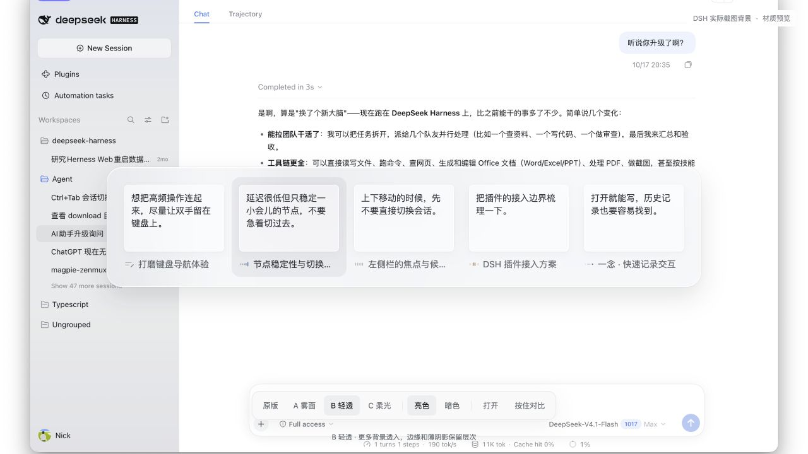
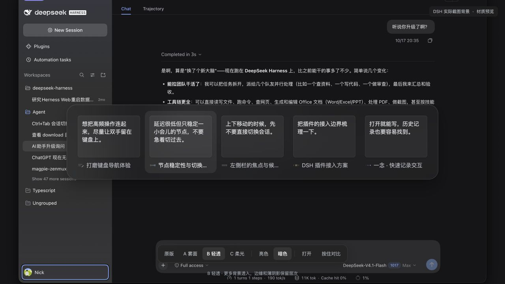

相同的形状，重新推敲分寸。
这轮的主张是让原文有阅读层次，让材质退到文字后面。先看 25「素笺」，再比较 26「墨透」和 27「书页」。28「随境」保留为主题适配方向。
从真实问题开始
- 用现有材质对照页打开 B「轻透」的明暗基准，截图观察。
- 看同样的五段原文：正文与标题都偏同一字重，正文是一整块文字；短输入留下一块无组织的空白，长输入则更像文本框。
- 看暗色层次：所有卡面都有亮度与独立阴影，选中项和正文各自争抢注意力。
- 保持几何和图标，按文字、材质、细节、色温分别试验，再把有效部分汇入精修方案。


取舍依据
重点看四件事：能否一眼认出会话；能否顺着原文读下去；选中项是否明确；材质是否与背景协调。没有把个人审美折算成貌似客观的分数。
- 首句与后文：只在原文已有标点处分开，前段 500 字重，后段保持可读的次级文字色。没有摘要、重写、关键词猜测或请求模型。
- 小卡片的空间：精修方案正文 14px / 21px，标题 13px；不增加重复标签。长内容保留原文，以四行截断。
- 文字与状态各有职责：文字负责辨认上次在说什么，五拍图标继续表示状态；不把装饰线条用作进度。
- 材质的职责：优先减弱内卡面边线和投影，再调整外壳透明度。选中态用稳定填充，无放大和额外位移动效。
- 性格的边界：宋体、引号、页边线都试过。它们更鲜明，也会减少可用空间或与代码内容冲突；保留可比较，不默认等同于更好。
四个值得继续的方向
| 方案 | 适合什么 | 代价 |
|---|---|---|
| 25 素笺 | 最均衡的日常版。中性薄面、自然字重分层，短中文和长句都可用。 | 克制的变化需要原尺寸比较，不能只看缩略图。 |
| 26 墨透 | 更通透、更轻的材质。暗色卡面较少出现发亮的灰块。 | 高对比背景下，需要检查背景穿透是否影响读字。 |
| 27 书页 | 更有文字性格。只把首句交给宋体，后文回到系统字体。 | 英文与代码场景不如素笺统一；依赖本地宋体可用性。 |
| 28 随境 | 尽量跟随背景色，不固定在冷蓝或暖灰。 | 目前只验证模拟主题色；真实 DSH token 接入未实现。 |
28 案目录
| 方案 | 尝试 | 取舍 |
|---|
参考与转化
Linear 的界面重设计记录强调减少视觉噪声、校准层次，并以少量基础色生成主题。这里借鉴的是中性透明层和主题关系，不照搬它的布局。
Raycast 的细节改版保留核心操作，改进细微视觉和紧凑模式。这里借鉴的是高频工具的克制：不为表达设计感增加一个必须被读到的标签。
Apple Typography 与 Materials 用作字体层级、可读性和材质退化的原则索引；本轮官方页面正文未由网页读取器完整返回，因此不引用其中的精确尺寸或版本结论。
验证与边界
语法与仓库内资源引用检查通过；原有 12 项测试通过。浏览器完成 56 组明暗尺寸与逐字原文核对，56 组 480px 窄窗末项可见性检查，精修四案 24 组长文/混排/边界状态，16 组可读性退化，以及 28「随境」的 10 组模拟主题色。原文切分另核对了 27 种文本，拼接结果与输入完全一致。
目视比较覆盖全部 28 案的明暗截图。修正了 27「书页」混排行高从最高 86px 超出正文可用 84px 的问题，以及无标点长段落被整段加重的问题。辅助媒体偏好模拟下，模糊关闭，完整五拍图形保持静止。未进行 VoiceOver、真实系统合成或真实宿主快捷键的新一轮验证，也不以截图声明完整无障碍合规。
可复核记录：检查汇总 · 明暗尺寸 · 窄窗 · 文本压力测试 · 材质退化 · 模拟主题。检查数量只表示本轮浏览器样例的覆盖，不能代替 DSH 插件验证。
研究台不读取真实会话、不保存输入原文、不调用模型、不更改主题设置；刷新后恢复虚构文案。候选编号在 URL 中可分享复现，加入比较的选择只存在当前页面内存。五拍动效直接复用正式模块，历史基线与插件源码保留。